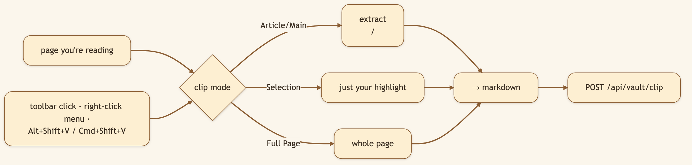
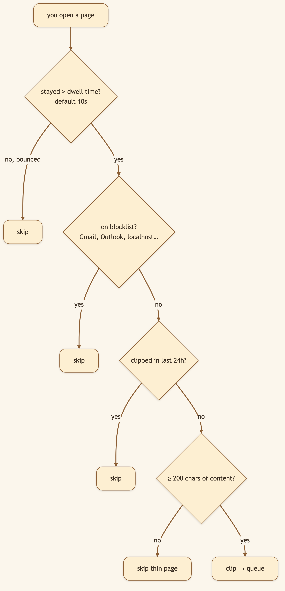
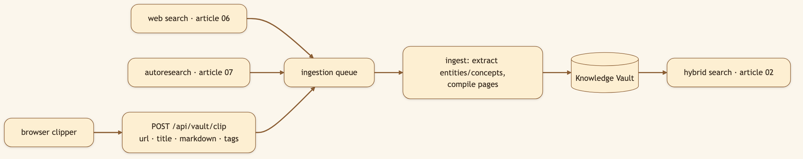

LinkedIn hook (use as the post's first line): "The best knowledge base is the one that fills itself. So I stopped bookmarking — now a browser extension clips what I read straight into my AI's memory, as clean markdown, automatically." Audience: LinkedIn → Medium. Researchers, PKM/second-brain enthusiasts, anyone with 4,000 dead bookmarks.
You're reading a great article. You know future-you will want it. So you do the dance: copy the URL, paste it somewhere, promise to file it properly later. You never do. The Knowledge Vault Clipper removes the dance: see something worth keeping, and it's in your vault — as clean, indexed markdown — before you've finished the thought.
🖼️ [User add: image containing — the extension popup open in a browser toolbar, showing the three clip modes + the "✓ Queued for ingestion" confirmation. Capture from Chrome with the extension loaded.]

A green checkmark badge and a "✓ Queued for ingestion" pill confirm it landed.
The game-changer. Auto-clip mode (on by default) captures public pages automatically as you browse — built to be thoughtful, not greedy.

Toggle it off anytime from the popup.

Three on-ramps, one library: what the agent searches, what it researches on its own, and what you read.
🖼️ [User add: image containing — the chrome://extensions "Load unpacked" flow with the knowledge-vault-clipper folder selected. A screenshot of the install step for the how-to section.]
content.js extracts, background.js dedupes and enqueues, popup.js drives the UI.document.querySelector("article, main") for Article mode, window.getSelection() for Selection, document.body.innerText for Full Page — emitted as markdown with title, source URL, and optional operator notes.POST /api/vault/clip with { url, title, markdown, topic, topic_tags }; the backend queues it and returns { status: "queued", … }. From there it rides the same ingestion pipeline as everything else.chrome.storage.local).chrome://extensions → Developer mode → Load unpacked → browser_extensions/knowledge-vault-clipper; confirm the API base points at your backend (default http://127.0.0.1:8001).Title card: "I stopped bookmarking. My browser feeds my AI now."
[0:00–0:10] Hook: "I have four thousand dead bookmarks I've never reopened. So I stopped saving links — and started clipping into my AI's memory instead."
[0:10–0:25] Screen — read an article, hit the shortcut: "Great article. One shortcut — and it's captured as clean markdown, straight into my knowledge vault. Done."
[0:25–0:45] Screen — show auto-clip + popup settings: "But here's the real trick: auto-clip. As I actually read pages — not the ones I bounce off — it files them automatically. It skips my inbox, skips duplicates, skips thin pages."
[0:45–1:00] Screen — search the vault for something read earlier: "Later, I search my vault — and everything I read is already there, indexed and ready. Open source, link below."
Load the extension, turn on auto-clip, read a few articles. Then open your vault and search — the things you read are already there.
Back to the series index.